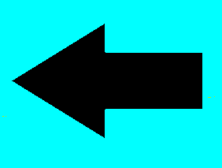

| SEXTO GRADO | |
“Vivimos en la tierra como si tuviéramos otra a la que ir.” - Terry Swearingen. |
~ LA PILA O BATERÍA DE FRUTAS ~
Este experimento nos demuestra que no solo con petróleo se puede crear energía luminosa, sino también con el sol, aire, agua y en este caso a partir de una fruta cítrica. |
| Si quieres hacer este experimento, te explicamos cómo realizarlo, sólo da clic en el botón ROJO | 
|
 |
~IMITEMOS LA ACTIVIDAD VOLCÁNICA EN LA COCINA ~
En este experimento el niño podrá ver la reacción volcánica con algunos materiales que encontrará en su cocina. |
| Si quieres hacer este experimento, te explicamos cómo realizarlo, sólo da clic en el botón AZUL | 
|
~ LIMONADA MÁGICA ~
Con la siguiente actividad podrás sorprender a tus amistades con un simple experimento, los dejarás con la boca abierta. |
| Si quieres hacer este experimento, te explicamos cómo realizarlo, sólo da clic en el botón VERDE | 
|
|
Regresar al inicio  |